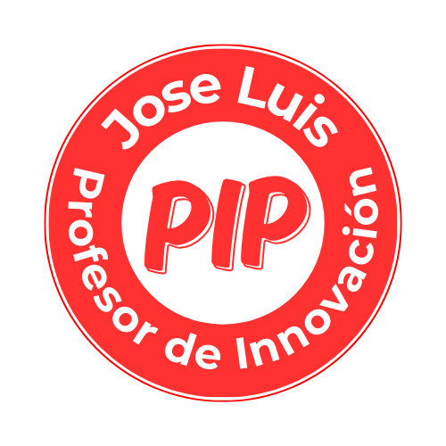

Simulador Virtual
EBR Primaria
CPM 2024
Evalúa tus conocimientos pedagógicos con nuestra casuística interactiva. Obtén retroalimentación inmediata y prepárate para el éxito en tu nombramiento.

Pregunta 1 de 50
2%
01:30:00